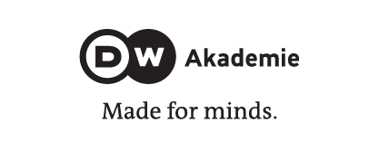

Arrecife es una revista anual que se aproxima al análisis de lo que sucede con los medios alternativos en Colombia y en latinoamérica y en especial lo que acontece con la radio comunitaria.
Para este primer número (2018) extendimos la invitación a personas cercanas a la radio comunitaria y quienes podrían ayudarnos a mirarla desde sus trabajos y reflexiones.
Es así como en las siguientes páginas se encontrarán textos sobre la relación de la radio comunitaria con la construcción de paz, la paz territorial y la memoria histórica así como una radiografía de las dificultades del ejercicio del periodismo y de los retos para su sostenibilidad financiera y política.
Agradecemos a Sandra Osses, Mónica Valdés, Ricardo Cubides y Patricia Rendón por los textos. A Pedro Vaca (Director ejecutivo FLIP) por autorizarnos a usar los artículos de Cartografías de la Información. A Belén Pardo por la mirada aguda y revisión sistemática y a Guillermo Solano por el tiempo dedicado a la diagramación y diseño.
Agradecemos también a la DW Akademie América Latina por su apoyo a través del proyecto Fortalecimiento de Medios Comunitarios que hace posible esta revista.
Creemos que bajo el mar de información e incluso desinformación sobre los medios alternativos y la radio comunitaria, todavía hay un sustrato sobre el que es necesario y posible detenerse a observar para poder andar.
Esperamos que disfruten conocer este Arrecife.
Cordialmente,
Asociación de Radiodifusión Comunitaria Vokaribe.
Un proyecto de:

Apoya:
Apoya